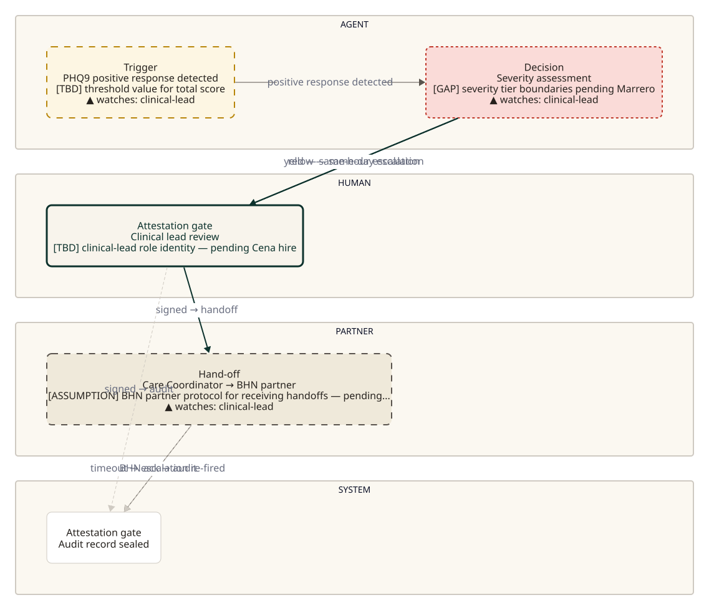
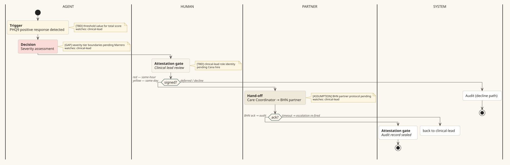
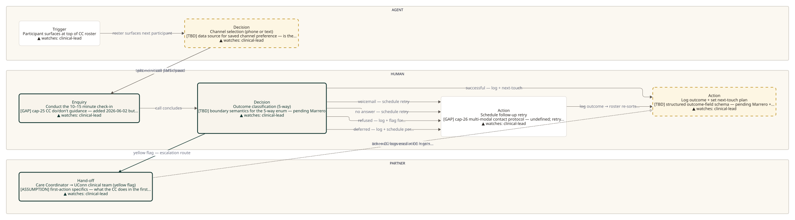
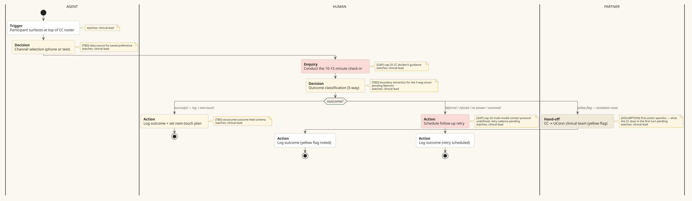

What's new: the prior version of this page compared two regimes — D2-ELK (text→auto-layout) and PlantUML (text→domain-native) — and called PlantUML the winner. The candidate rule that fell out of that work said: "spike the top candidate in each regime." Regime 3 (interactive surface + manual placement) was named but not spiked. This page adds the third column.
The substrate for regime 3 is tldraw — open-source interactive whiteboard whose document format (.tldr JSON) and SVG renderer are both standalone-usable. Lanes are frames; steps are geo shapes (rectangle / diamond); edges are arrows; annotations are notes. Position is first-class in the document (every shape has explicit x, y — no auto-layout). Generated here by a small Python adapter that consumes the same diagram.md spec the PlantUML and D2 emitters read.
tldraw column = second cut (2026-06-04 polish pass). What changed from cut 1: lane labels now render as separate left-edge text shapes (was: tldraw default frame.name at top-left); 220px canvas-top buffer added so callouts no longer crop; arrow size bumped from "s" to "m" for visibility; diamond enlarged to 240×130 so decision text fits; redundant prefixes ("decision-", "action-") stripped from node labels.
Remaining issues you'll see in cut 2 (none are substrate-shape problems; some are tldraw conventions): (1) small "Frame" labels at top-left of each lane frame — tldraw substitutes the default "Frame" name when `name` is empty or single-space, so suppressing them entirely needs a different container shape (use a geo-rectangle as the lane container instead of a frame; ~10 min). (2) Callout sticky-note bounds (tldraw's `note` shape has a min size around 180–200px regardless of text length) overlap with the lane top edge — they don't crop, but they crowd the AGENT-lane nodes. Fix: use a `geo` rectangle with semi-fill for callouts instead of `note`; ~15 min. (3) Right-edge node text wraps oddly because the canvas viewBox grew with the X_BUF + Y_BUF additions. Fix: pad node margins; ~5 min. None of these change the substrate-fitness call.
Decision criteria, pre-named so the call doesn't drift: tldraw wins if its renders are at least as clean as PlantUML's on both cases and the JSON-as-source feels authorable from the spec (the "fill it in like a Mad Lib" test) and position-as-first-class shows up as a visible lever. PlantUML wins if tldraw doesn't beat its renders. Hybrid wins if both viable — PlantUML for batch-render the catalog, tldraw for iteration-loop nudging during scoping.
Sparse: 4 lanes (AGENT/HUMAN/PARTNER/SYSTEM), 5 activities, 2 decision diamonds, 1 back-edge.



Dense: 3 lanes, 7+ activities, 3-way branching decision (the case v0.8 broke hardest on).



switch/case gives each branch its own labeled outgoing edge with no collision.<<#hex>> stereotype is the equivalent of D2's style.fill.